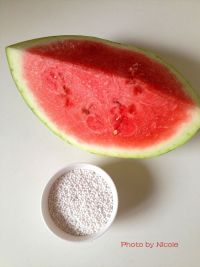

<style>
/* custom */
section[data-id="1"] {
    /*background-color: #B4EACF;*/
}

</style>

<voice-pig id="voice-1" text="part1准备材料：西瓜300克、西米100克" onStop="goNext()"></voice-pig>
<!-- 第一屏 -->
<section class="page page1">
    <div class="box1 animated bounceInDown hide">
        
    </div>
    <div class="box2 animated bounceInUp hide">
        <i>1</i>
    </div>
    <div class="box3 animated bounceInLeft hide">
        <p>准备材料：西瓜300g、西米100g</p>
    </div>
</section>
